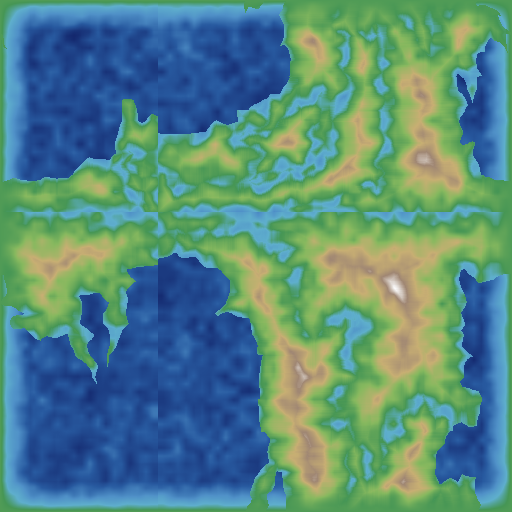

01
球面Voronoi 14原始小板块
domain-warped + sub-centers + pressure relaxation 生成的不规则板块

02
合并后六大板块
非相邻海洋种子 + 面积均衡 BFS 将14小板块归并为6大板块（2海+4陆）

03
合成高程图
Voronoi板块分类 + 距离边界变换 + 多层分形噪声生成的地形

04
陆地居中
center_land: 平移地图让海洋集中在边界

05
叠加噪声高程
add_noise_to_elevation: 8层Simplex噪声增加细节

06
边界海洋
place_oceans_at_map_borders: 压低地图四周

07
海洋初始化后高程
识别海洋、平滑海床，确定丘陵/山脉阈值

08
海陆掩膜
蓝色=海洋(56%), 绿色=陆地(44%)

09
海洋深度
浅蓝=浅海, 深蓝=深海

10
温度分布
TemperatureSimulation: 蓝=低温, 红=高温

11
降水量
PrecipitationSimulation: 黄=干旱, 蓝=湿润

12
河流图
ErosionSimulation: 暗蓝=河流, 淡蓝=湖泊

13
侵蚀后高程
水流侵蚀+河流搬运后的地形

14
水系图
WatermapSimulation: 溪流+河流+主河道
15
灌溉适宜性
IrrigationSimulation

16
湿度分布
HumiditySimulation: 黄=干燥, 绿=湿润

17
渗透性
PermeabilitySimulation

18
生物群系
BiomeSimulation: 综合温度/降水/湿度的高程分带

19
冰盖
IcecapSimulation: 白=冰盖, 蓝=无水冰区